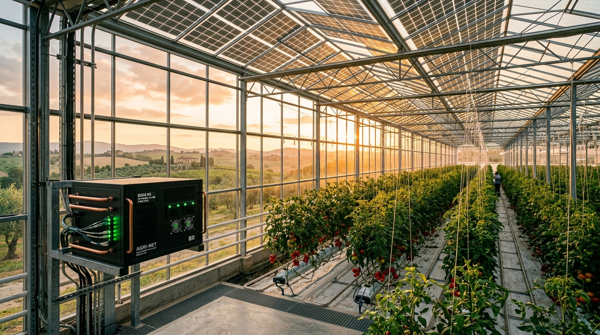
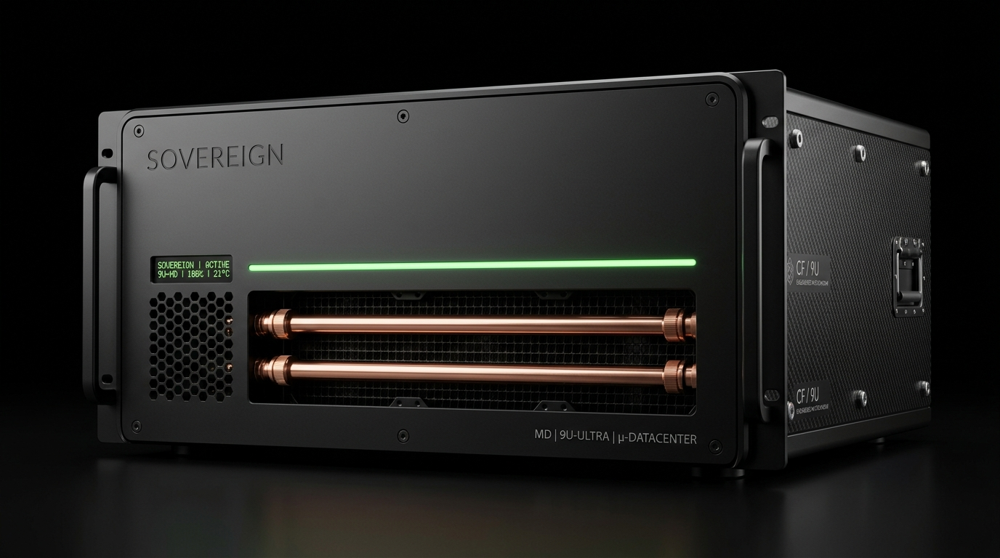
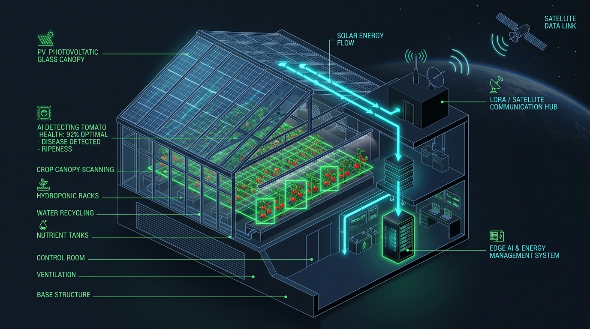

Integrating Agri-PV Systems in Weak Rural Grids via Behind-The-Meter Sovereign Edge Compute & Dynamic Load Shedding

Why high-potential agrivoltaic projects face grid connection refusal, severe curtailment, and stalled licensing
Greenhouses offer massive dual-use surface area for semi-transparent BIPV solar glass. Clean power can be harvested without consuming valuable agricultural land or impacting crop growth.
Rural distribution grids in Greece and Southern Europe lack transmission capacity. Upgrading substations takes 5+ years, resulting in outright grid connection rejections for farmers.
Transforming stranded solar kilowatt-hours into on-premise AI intelligence in sub-100 milliseconds
Chemical batteries suffer from high upfront CapEx, finite charge cycle degradation, and fire risk. SMDC-Agri absorbs stranded power behind the meter into computing work—yielding 10× higher economic productivity per kWh while guaranteeing 100% compliance with DSO zero-export limits.
Validating sub-second dynamic load shedding on in-house DGX Spark hardware without equipment purchasing

Direct DC coupling with BRITE PanePower glass + 48V LiFePO4 buffer + closed-loop liquid cooling rejected into greenhouse thermal mass.
Hardware priority enforcement: guarantees L₀ Life Support (irrigation, ventilation) while dynamically throttling L₂–L₄ AI compute.
Hardware-in-the-Loop (HIL) emulation with real PanePower I-V curves, simulating feeder voltage sags and sub-100ms load shedding.
Complete 3D architecture: real-time canopy computer vision, PAR optimization, and autonomous hydroponics

TensorRT models detect fungal mold, leaf blight, and fruit ripeness locally. Zero cloud egress costs and instant alerts.
Couples live solar radiation with plant photobiology, balancing energy harvest vs. crop Daily Light Integral (DLI).
Guarantees un-sheddable power for nutrient dosing, water pumps, and ventilation fans during all weather conditions.
Autonomous operation in remote rural regions with zero reliance on public cellular or commercial fiber networks
When weak rural feeders drop or suffer voltage sags, the solid-state transfer switch isolates in <15ms. Greenhouse fans, pumps, and sensors stay operational without losing a single cycle.
Post-Quantum Cryptography (NIST FIPS 203/204) secures mesh communications. Agricultural yields, proprietary recipes, and sensor logs never leave the farmer's physical perimeter.
Turning regulatory gridlocks into a high-margin dual-revenue commercial deployment model
| Metric / Parameter | Standard Agri-PV (Weak Rural Grid) | Agri-PV + SMDC-Agri (Behind-the-Meter) | Net Advantage / Impact |
|---|---|---|---|
| Grid Connection Status | Denied or delayed by DSO (overvoltage risk) | Approved (Zero-Export / Dynamic Limit compliant) | Fast-tracks project licensing |
| Peak Solar Curtailment | 25% – 45% peak midday energy wasted | < 2% (Absorbed by local AI compute) | +35% energy recovery |
| Revenue per Curtailed kWh | €0.00 / kWh (dumped or curtailed) | €0.25 – €0.75 / kWh (AI compute productivity) | High-margin digital revenue |
| Upfront Validation CapEx | Uncertain / High Risk | €0 (Utilizes existing DGX Spark testbed) | Zero financial barrier for POC |
| Capital Payback Period | 8.5 – 9.5 Years (curtailment penalty) | 3.8 – 4.2 Years (subsidized by compute) | 50%+ Faster Capital Payback |
Focused technical co-design and validation milestones with BRITE using our in-house DGX Spark testbed
Direct technical co-design with BRITE engineers on PanePower I-V curves, glass specs & DSO constraints.
HIL Validation on DGX Spark: Sub-100ms dynamic load shedding demonstrated on live testbed.
Ilias Chrysovergis (CEO/CTO, Dipl. ECE AUTh, MSc Imperial College London, PhD cand., Global 1st Microsoft Imagine Cup) · Archontis Kostis (Lead Software & Cloud Architect, MSc UoM) · Elena Vagiannopoulou (Operations & Materials Lead, BSc Chemistry AUTh) · Nikos Nikolaidis (Full Stack & Systems, BSc UoM) · Stelios Palatidis (Edge & Mobile Systems, BSc UoM).
Contact: Ilias Chrysovergis · iliachry.gr · Repository: github.com/iliachry/sovereign-mini-datacenter